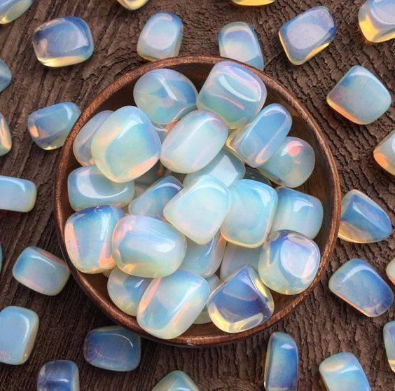
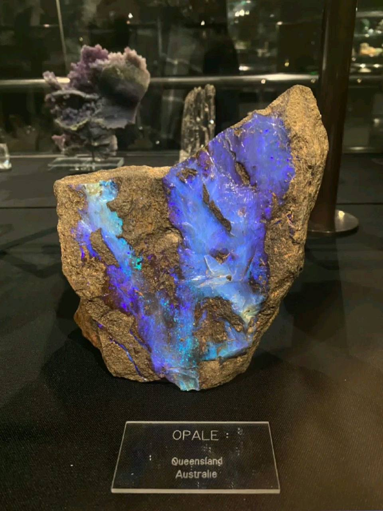
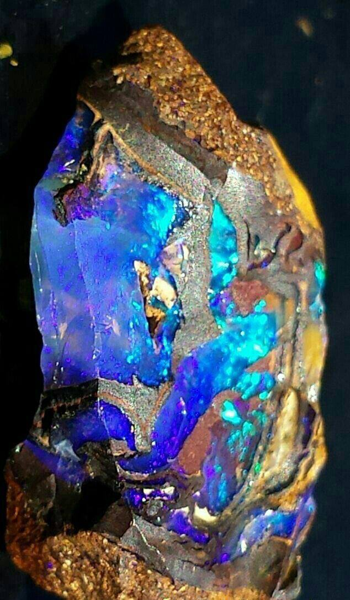
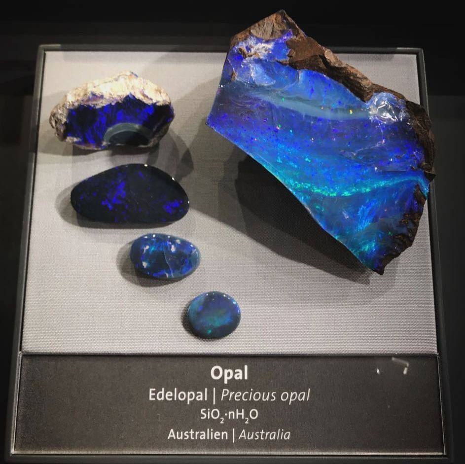

الأوبال (Opal)
- المصدر: أستراليا، إثيوبيا، المكسيك.
- الخواص:
- يعكس ألوان قوس قزح
- هش جدًا (5.5–6.5/10 على مقياس موهس)
- يحتوي على نسبة من الماء
- الاستخدامات: يُستخدم في الخواتم والزينة، ويُقال إنه يعزز الإبداع والتعبير الفني.
- الألوان المتوفرة: أبيض، أسود، أزرق، أخضر، برتقالي، وردي.
- أكثر لون نادر: الأسود اللامع مع ألوان طيف كاملة.
- أكثر لون شائع: الأبيض مع لمعان ملون.



